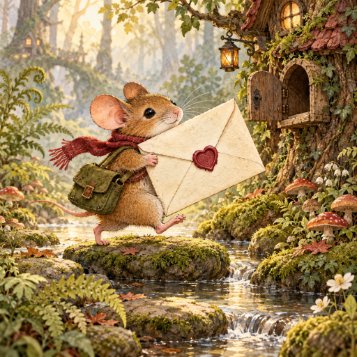

<- all projects

Postmouse
PC
Volume
Live
Small paws. Enormous letters.
Build words to cross a woodland village carrying a letter larger than you. Along the way you deliver funny notes, mend small misunderstandings and follow a very shy romance. Trace letters in the wheel to build a word, then deliver it, and find every word in the letter's route to complete it. Extra valid words earn a little ink. There are 150 woodland deliveries and 40 neighbor-to-neighbor letters to read across eight neighborhoods, plus bonus words to find and deliveries to revisit whenever you like.